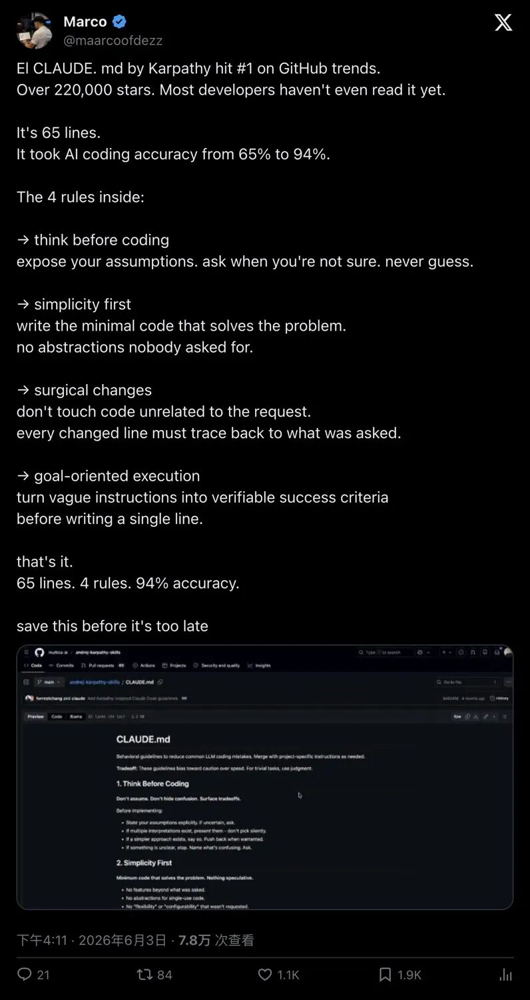
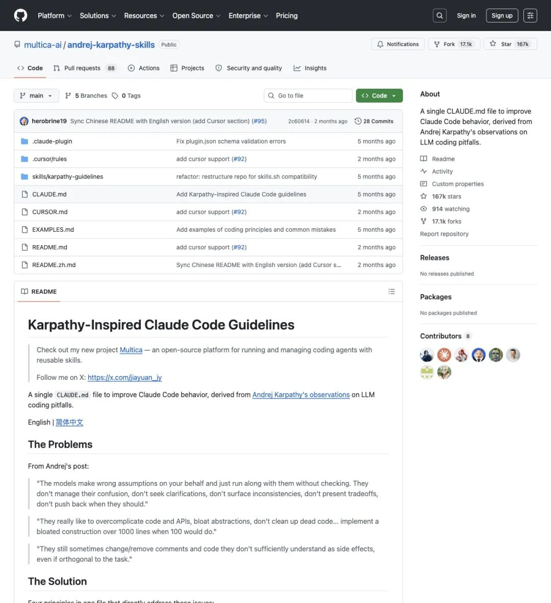
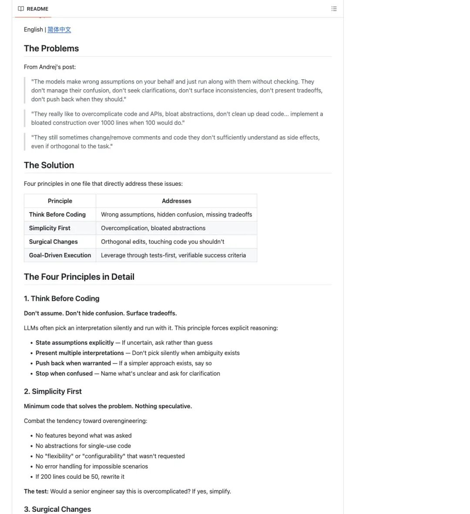
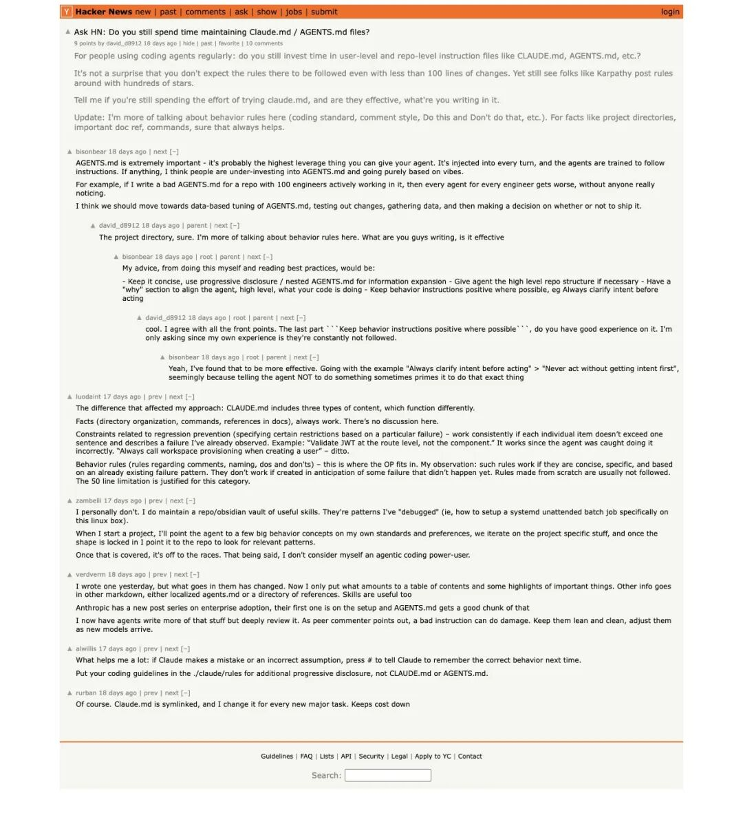

一份只有 65 行的 `CLAUDE.md` 文件冲上 GitHub 热榜榜首，星标飙过 16 万。帖子声称，靠这四条规则就能把 AI coding 准确率从 65% 拉到 94%。更关键的是：这份规则的灵感来自 Andrej Karpathy 对 LLM 编码失败模式的观察。开发者反应两极——有人当天就塞进了自己的 repo，也有人追问：94% 的数字到底怎么测的？
GitHub 热榜，被一份文本文件占了
6 月 3 日，X 用户 Marco 发了一条帖子，把一份 `CLAUDE.md` 压缩成了几个数字：
"EI CLAUDE.md by Karpathy hit #1 on GitHub trends. Over 220,000 stars. Most developers haven't even read it yet. It's 65 lines. It took AI coding accuracy from 65% to 94%."
「Karpathy 的 CLAUDE.md 冲上了 GitHub 热榜第一。超过 22 万星标。大多数开发者甚至还没读过。它只有 65 行。它把 AI coding 准确率从 65% 拉到了 94%。」

▲ Marco 的帖子，把项目浓缩成"65 行 + 4 条规则 + 准确率翻倍"
帖子抓取时的互动数据：7.88 万浏览、1144 赞、1885 收藏。
但这里要先厘清一件事：这份 `CLAUDE.md` 并非 Karpathy 本人的官方仓库。GitHub 上实际承载它的项目是 `multica-ai/andrej-karpathy-skills`，README 的定位写得很明确——
"A single CLAUDE.md file to improve Claude Code behavior, derived from Andrej Karpathy's observations on LLM coding pitfalls."
「一份单独的 CLAUDE.md 文件，用来改善 Claude Code 行为，来源于 Andrej Karpathy 对 LLM 编码陷阱的观察。」
这份文件的灵感来自 Karpathy 对 AI 编码失败模式的公开分析，由社区整理成了可直接落盘的规则文件。在 GitHub 热榜聚合页上，它和另一个版本 `forrestchang/andrej-karpathy-skills` 同时处于高位，分别拿到了约167k和120k的星标。

▲ multica-ai/andrej-karpathy-skills 仓库首页，星标和 fork 数持续攀升
▲ AI Signals / RepoTracker 热榜：两个版本同时进入高位
拆开看：65 行里到底写了什么
打开这份 `CLAUDE.md`，内容短到有点出乎意料。四条原则，每条带几行行为约束：
原则一：Think Before Coding（写代码之前先想清楚）
核心要求：不要假设、不要隐藏困惑、有多种解释时主动问、把 tradeoff 摆到台面上。
这条规则直接对准 AI coding 最常见的坑——模型替你做了错误假设，然后不核对就一路跑下去。
"The models make wrong assumptions on your behalf and just run along with them without checking."
「模型会替你做错误假设，而且不核对就一路执行下去。」
原则二：Simplicity First（简洁优先）
核心要求：只写解决问题的最小代码、不加用户没要的功能、不为一次性代码做抽象、200 行能缩成 50 行就该重写。
对准的另一个高频问题——LLM 特别喜欢把代码和 API 复杂化。明明只要修一个点，它会顺手搭起一整套架构。
"They really like to overcomplicate code and APIs..."
「它们特别喜欢把代码和 API 复杂化。」
原则三：Surgical Changes（精准修改）
核心要求：只动必须动的地方、不顺手"改善"邻近代码、不重构没坏的部分、匹配既有风格。
这条可能是团队开发中最刚需的——对抗 diff 污染。你只让 AI 修一个 bug，结果 PR 里多出了一堆格式变更、注释重写、命名修改和无关 import。Review 成本直接翻倍。
原则四：Goal-Driven Execution（目标驱动执行）
核心要求：先定义 success criteria、把模糊指令改写成可验证的目标、用测试驱动 loop。
README 里给了几个转换示例：
"Add validation" → "Write tests for invalid inputs, then make them pass" "Fix the bug" → "Write a test that reproduces it, then make it pass"
这条规则要解决的问题是：LLM 擅长在目标明确时循环逼近结果，但如果只说"把它弄好"，模型会把自己的完成感错当成真实完成。

▲ CLAUDE.md 的四条原则与对应的 LLM 编码问题映射
四条"常识"为什么能拿 16 万星标
这四条单独拿出来看，资深工程师可能觉得"这不就是常识吗"。
但它能在 GitHub 拿到 16 万星标、在 X 上被近 2000 人收藏，恰恰说明：大家隐约知道这些道理，但没人把它压缩成一份可以直接塞进 repo 根目录的默认工作流。
这份文件的使用门槛几乎为零：
不用换模型 不用学新框架 不用买新工具 只要把 `CLAUDE.md` 放进项目根目录
它可以和 Claude Code、Cursor、Codex 等各种 coding harness 搭配使用。比起"等更强的模型"或者"搭更复杂的 workflow"，一份 65 行的文本文件更容易让人产生"今天就能试"的冲动。
这也解释了为什么 GitHub 上会同时出现多个版本——`multica-ai` 和 `forrestchang` 两个 repo 都在热榜高位。门槛低、复制快，模板级内容天然适合裂变。
94% 这个数字，经得起追问吗
Marco 帖子里最抓眼球的数字是"AI coding 准确率从 65% 拉到 94%"。
但截至目前，这个数字在公开可查的资料里找不到完整的方法学支撑。没有 benchmark 文档、没有任务集说明、没有实验设置、没有统计样本、没有复现路径。
X 的回复里已经有人追问：
"Interesting how it was measured and on what type of tasks."
「想知道是怎么测的、测的是什么类型的任务。」
这不意味着规则本身没有价值。但"65%→94%"这个说法，目前更适合理解为帖子里的宣传包装——独立验证的实验结论还没有出现。
这份文件的真实贡献可能不在那个百分比。它把散落的工程经验压缩成了一份所有人都能直接用的行为模板，对开发者来说，这本身就够有吸引力了。
Hacker News 上更冷静的声音
GitHub 在飙星标的同时，Hacker News 上的讨论明显更冷静。一条 Ask HN 帖子直接问：你还会维护 CLAUDE.md / AGENTS.md 吗？它们到底有没有效？

▲ Hacker News 上关于 CLAUDE.md / AGENTS.md 实际效果的讨论
评论区的高频观点：
- Instruction files 确实有用，但必须短、能渐进展开。
太长太抽象的规则，模型根本不会遵守。 - 行为约束比大型知识库更容易被模型执行。
告诉它"什么情况必须问""什么风格不能碰""什么才算完成"，比塞一整个文档库管用得多。 - 事实型信息和行为规则型信息，效果机制完全不同。
目录结构、命令、文档入口是查找参考；行为约束是持续生效的护栏。
这些讨论说明：开发者已经在认真把 repo-level instruction files 当成工程问题来处理，而不只是 GitHub 上的热门模板。
更深的信号：AI coding 正在转向"流程工程"
把视角拉远一步，这份 65 行文件引发这么大范围的讨论，背后指向 AI coding 领域一个更深的变化。
AI 编码工具成熟之后，开发者发现问题早就不只是"模型不会写代码"——
会写，但容易误解需求 会写，但容易过度工程 会写，但 diff 污染严重 会写，但把"我感觉完成了"当成"任务真的完成了"
于是 repo-level instruction files 开始承担"行为护栏"的角色。告诉模型什么情况下必须问、什么风格不要碰、什么才算完成——这些约束的价值，可能不亚于模型本身的能力提升。
而从社区反馈和热榜数据来看，单个 prompt 文件容易被复制，真正能拉开差距的在下一步：
怎么嵌入团队 review 流程 怎么和测试/验证 loop 绑定 怎么把项目结构、命令、上下文和行为规则组合起来 怎么在不同 harness 里稳定工作
表面看，是一份 65 行文件突然火了。往深了看，AI coding 正在从"换更强的模型"转向"把好的工程习惯固化成基础设施"。
— END —